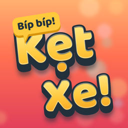

Kẹt Xe!
Hỗ trợ · Support
Hỗ trợ
Kẹt Xe! là game giải đố gỡ kẹt xe giờ tan tầm ở Sài Gòn: chạm xe cho chạy ra bến, đón khách mặc áo mưa cùng màu, và học 15 luật giao thông thật qua từng màn chơi.
Tiến trình chơi có được lưu không?
Có. Game lưu ngay trên máy và đồng bộ qua iCloud của chính bạn, nên chơi trên iPhone và iPad, hay cài lại game, vẫn giữ được màn, sao và xu.
Bảng xếp hạng và thành tựu ở đâu?
Đăng nhập Game Center trong Cài đặt của iPhone hoặc iPad. Game có bảng xếp hạng tổng sao, bảng thử thách ngày và 12 thành tựu.
Làm sao bật hay tắt lời nhắc thử thách ngày?
Mở Cài đặt trong game. Lời nhắc là thông báo trên máy lúc 19:00 mỗi tối, tắt lúc nào cũng được.
Game có quảng cáo hay mua hàng trong app không?
Không. Xu và tăng lực đều kiếm được khi chơi.
Kẹt ở một màn khó?
Dùng nút Đi lại, Gợi ý (mở từ màn 5) hoặc các tăng lực: Chú Giữ Xe, Xe Cẩu, Máy Bơm.
Liên hệ
Gửi email tới minhandsi1131@gmail.com. Bạn ghi giúp tên máy, phiên bản iOS và mô tả lỗi, có ảnh chụp màn hình thì càng tốt.
Support
Kẹt Xe! is a puzzle game about clearing Saigon's rush-hour traffic jams: tap vehicles out to the pickup bays, board riders in matching raincoats, and learn 15 real traffic rules as you play.
Is my progress saved?
Yes. The game saves on your device and syncs through your own iCloud, so your levels, stars and coins carry over between iPhone and iPad and after reinstalling.
Where are the leaderboards and achievements?
Sign in to Game Center in your iPhone or iPad Settings. The game has an all-time stars leaderboard, a daily puzzle leaderboard and 12 achievements.
How do I turn the daily puzzle reminder on or off?
Open Settings inside the game. The reminder is a local notification at 7 pm, and you can turn it off at any time.
Are there ads or in-app purchases?
No. Coins and boosters are all earned by playing.
Stuck on a hard level?
Use Undo, Hint (from level 5) or the boosters: Parking Attendant, Tow Truck and Water Pump.
Contact
Email minhandsi1131@gmail.com. Please include your device model, iOS version and what happened, ideally with a screenshot.